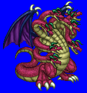
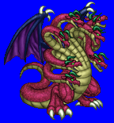
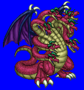
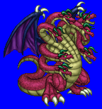

Height: ??? Weight: ???
Habitat: ??? Origin: Iraq (Persia)
Meaning: "Salt water"
The mother of the gods in ancient Babylonian myth. She is usually pictured as a dragon, but sometimes as a creature with bird-like or human-like features. She and her husband Aspu created the demigods of Babylonian myth. However, the demigods made such a racket that Aspu and Tiamat resolved to kill them so they could sleep. The demigods uncovered the plot and killed Aspu before the plan could be carried out. The demigods asked Mardruk, the youngest of the demigods, to finish the job and kill Tiamat. After succeeding, Mardruk spread Tiamat's skull, entrails, and blood far and wide, creating the cosmos.